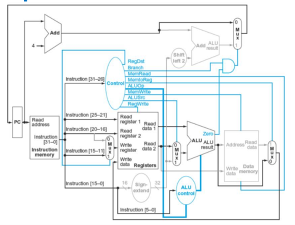
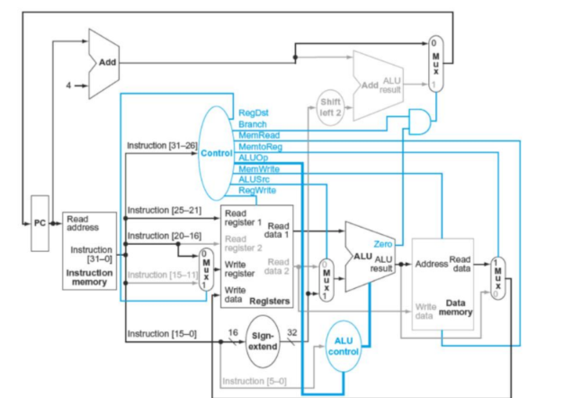
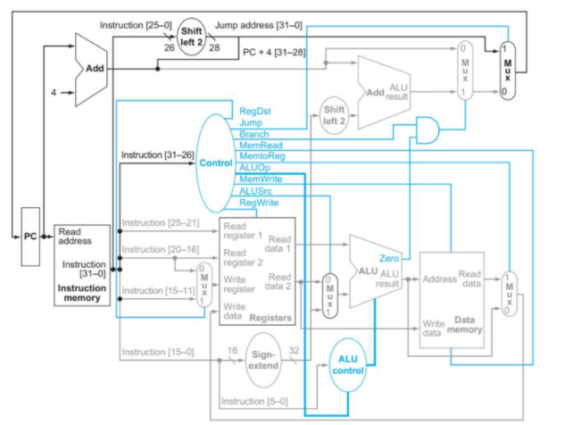

Analisis del Datapath y Formatos de Instruccion
Proyecto Arquitectura de Computadoras
Nombres
El datapath de este microprocesador MIPS de un solo ciclo coordina el flujo de datos y señales de control para ejecutar instrucciones en un pulso de reloj[cite: 1]. El proceso general sigue esta secuencia[cite: 1]:
Las instrucciones Tipo R operan exclusivamente con registros. El diagrama muestra como los campos rs y rt van al Banco de Registros para ser leidos, pasan por la ALU para la operacion, y el resultado regresa al registro destino rd.

En el Tipo I se utiliza un valor constante de 16 bits en lugar de un tercer registro. Este valor pasa por la extension de signo (Sign Ext) para convertirse en 32 bits antes de entrar a la ALU o calcular direcciones de memoria.

Las instrucciones Tipo J sirven para saltos incondicionales. Utilizan un indice de 26 bits que, tras un corrimiento a la izquierda (Shift Left), calcula directamente la nueva direccion a la que debe saltar el PC.
